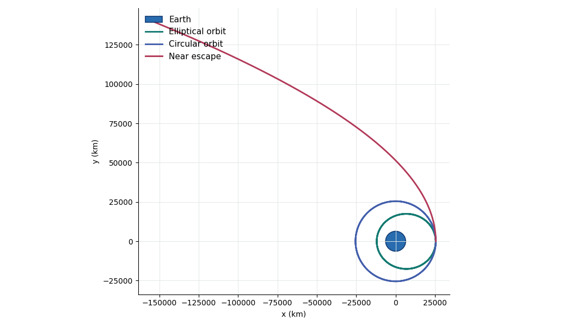

Computational example Julia
Orbital Motion from Universal Gravitation
Change the launch speed and watch gravity turn a straight-ahead journey into an ellipse, a circle, or an escape path.
F = G M m / r2 → a = G M / r2
Earth-centered two-body model · initial radius 4 Earth radii · no atmosphere or thrust
Circular orbit
Gravity continually turns the velocity without changing the orbital radius.
Gravity force on the spacecraft:
Mechanical energy of the spacecraft:
Changing the test mass changes force and total energy by the same factor, so the displayed path does not change.
Download selected trajectory (CSV)37 saved Julia launch speeds · 361 samples each · browser playback only
Three Reference Launches
The spacecraft begins tangentially at four Earth radii. Below circular speed it begins at an apoapsis and falls inward; at circular speed, gravity supplies exactly the required centripetal acceleration; above escape speed, the specific orbital energy becomes positive.

From Force Law to Orbit
For a test mass m around an Earth mass M, Newton's second law and the universal law of gravitation give
m d2r/dt2 = -G M m r/r3, so d2r/dt2 = -μr/r3, μ = GM.
The test mass cancels. That is why a small satellite and a much heavier satellite follow the same path when released from the same position and velocity. The explorer's mass control changes the force and total energy readings, but not the saved trajectory.
At radius r0, circular motion needs vc = √(μ/r0). The escape threshold is vesc = √(2μ/r0) = √2 vc. The diagnostic used here is specific energy, ε = v2/2 - μ/r: negative for bound ellipses, zero at escape, and positive for unbound motion.
Numerical Method and Limits
Julia advances the planar state with velocity-Verlet, a symplectic method well suited to conservative gravitational motion. The calculation saves two circular-orbit periods at 361 equally spaced times for each launch speed. The published explorer never runs Julia or numerical integration in the browser or on PhysicsLibrary servers.
This is the ideal two-body problem. It omits the Moon, Earth oblateness, atmospheric drag, relativity, thrust, collisions, and any mass change. A near-escape trajectory is followed only through the finite saved time window.
Reproduce and Reuse
The Julia project contains the integrator, inputs, tests, saved trajectories and provenance.
Download Julia project 1264 KBJulia 1.10.12 · no external Julia packages
Publication Record
Every explorer path comes from the reviewed Julia calculation. Selecting controls only chooses a saved case and sample.
Calculation provenance · Article attachment bundle · LaTeX article